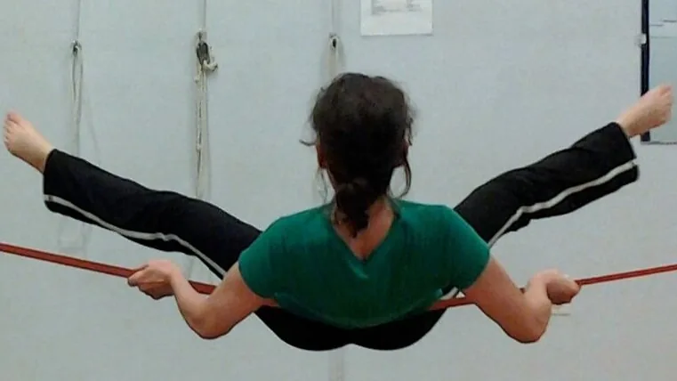
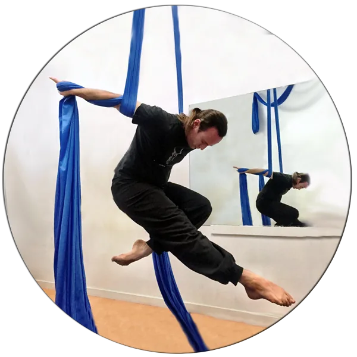
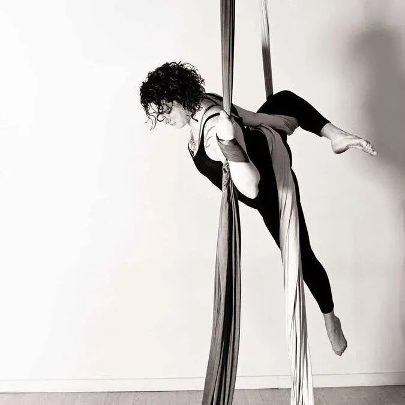
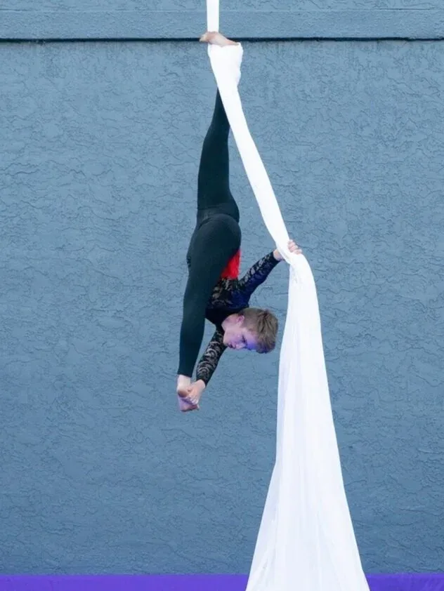
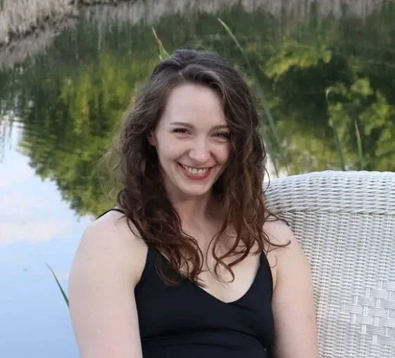
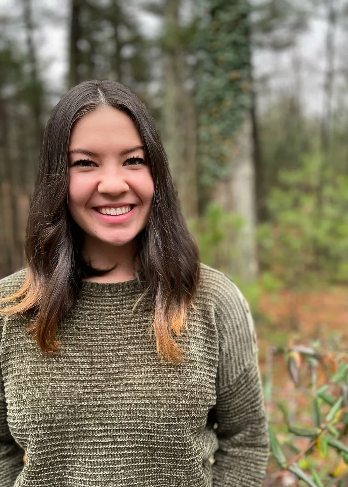
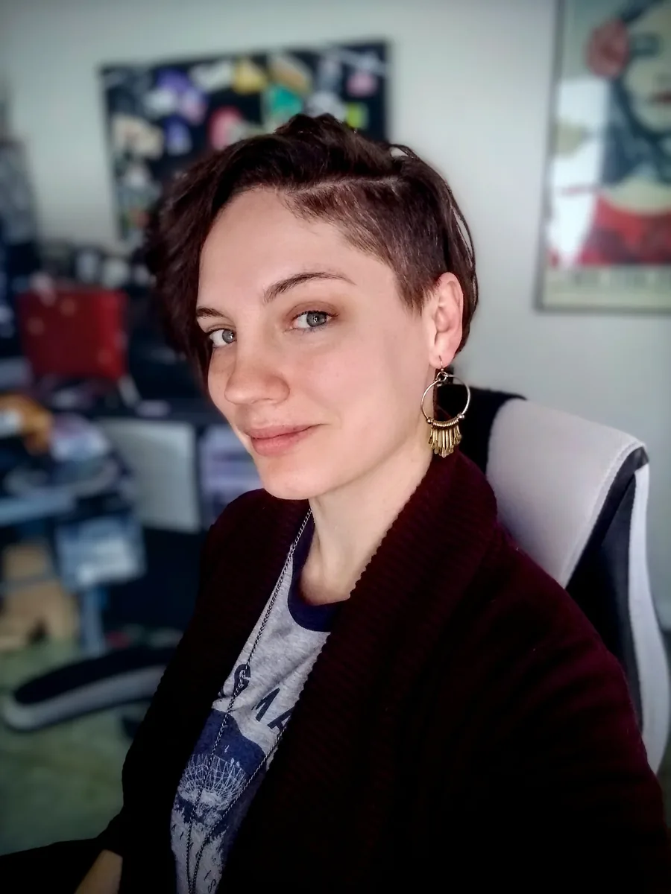
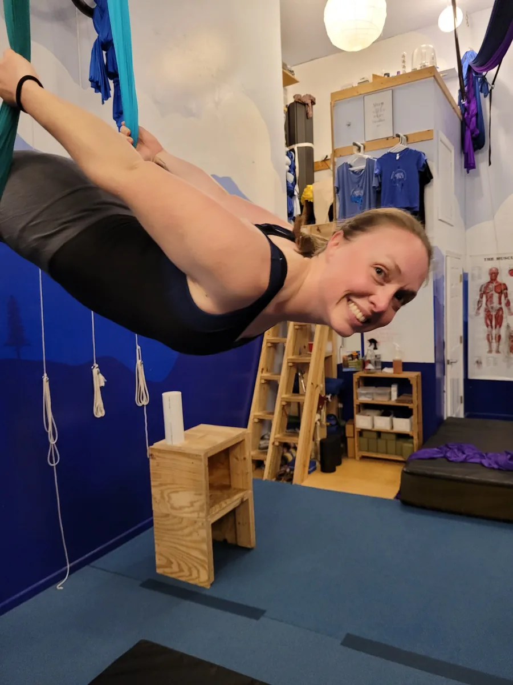
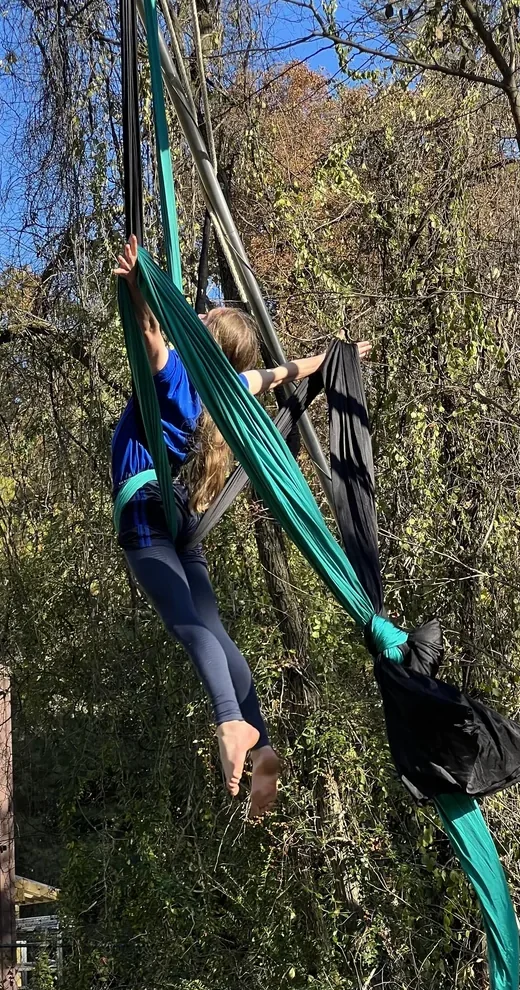
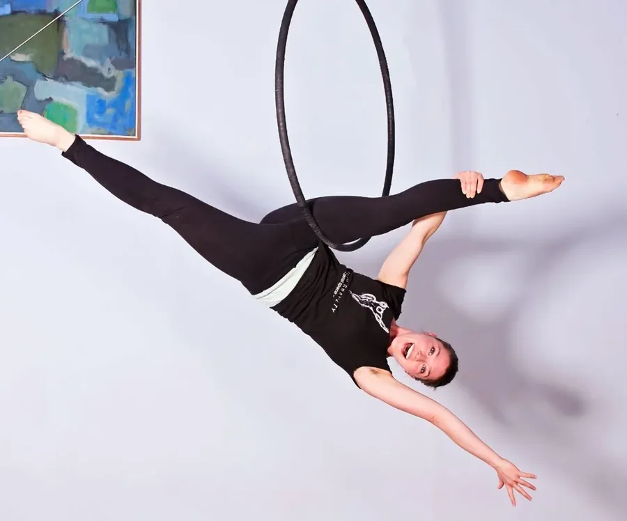

The people behind the flying.
Founded in 2009, Aerial Space is North Carolina's first circus arts studio. Our instructors come from dance, gymnastics, theater and everywhere in between.

A profound gift of self-discovery, disguised as flying.
We teach to your body, your mind and your heart, all three. Class stays constructive, non-competitive and friendly, a sanctuary from the pressures of the outside world. You'll move through clear, linear progressions, safe technique first, aesthetic variations later, cultivating six things we think matter equally:
Ten instructors, ten very different paths to hanging upside down.

Andrew Hartnagel
Owner, Aerial SilksFormer ropes course director and martial arts instructor with a geology degree. NECCA-trained since 2010, specializing in curriculum development, fabric theory and injury prevention.

Valerie Phillips
Owner, Mixed ApparatusPracticing aerial arts since 2011, with a background in ballet, modern dance and theater. Valerie loves performing, whether it's on trapeze, silks, or with her rock band.

Turpentine M.
Silks, Flexibility, AcroAsheville native who started dancing young and has taught aerial arts and acrobatics since 2015. Also a fine artist with a deep interest in sociology.

Carly Christensen
Silks InstructorMFA in acting, with a background in team sports, powerlifting and bodybuilding. Silks turned out to be the perfect mix of grace and strength she'd been looking for.

Emma Martin
Kids' Classes InstructorStarted aerial training at 14. Health and Fitness Science degree, ACE-certified personal trainer since 2019, and an Asheville native.

Caroline Dougherty
Silks Instructor & DesignerPracticing aerial arts since 2019. Her teaching philosophy centers on nurturing mental health and rediscovering the joy of play.

Megan MacLeod-Blackwell
Silks, Trapeze & LyraBegan her aerial journey in 2021, right here at Aerial Space. Passionate about encouraging students through their own aerial arts journey.

Rillian Thacker
Multiple ApparatusTraining in circus arts since age 12, across lyra, silks, trapeze, slackline, straps and doubles aerials. Also sings in a chorus and a barbershop quartet.
Michelle MacLeod
Silks & Trapeze InstructorBegan training in 2021, with a background in dance and musical theater. Holds degrees in mathematics and fermentation science, and has been a safety trainer since 2018.

Anna Bartlett
Trapeze InstructorTwelve years of gymnastics training and four years teaching it. Started aerial training in 2010, performing with Asheville Aerial Arts and Bromelia Aerial Dance Collective.
Come meet us in person.
The best way to understand the studio is to spend an hour in it.